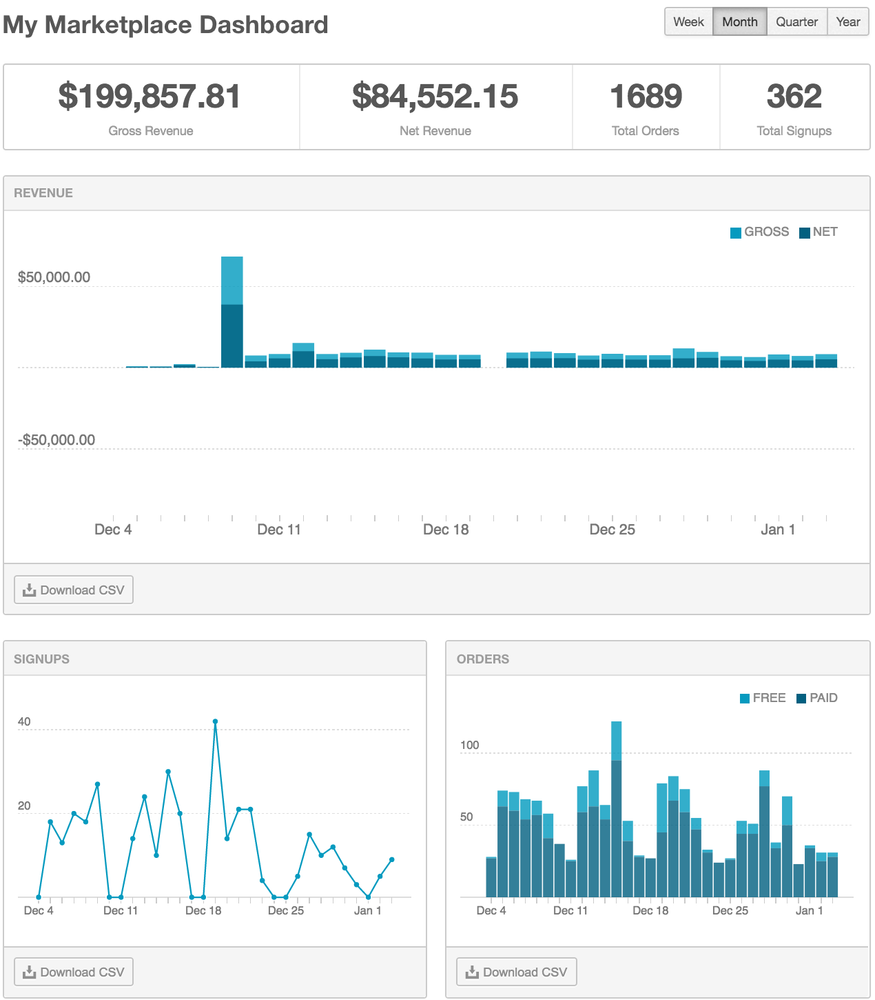

View your marketplace dashboard
Marketplace Managers can access a marketplace dashboard to view sales and membership metrics, generate reports, and manage requests from marketplace users.
To view your marketplace dashboard
- Go to Manage > Marketplace > Dashboard > Home | Overview. The My Marketplace Dashboard page appears.

Note the following in the dashboard graphic:
- It contains three graphs: Revenue, Signups, and Orders.
- The reporting period is monthly (Month is the default reporting period).
- The summary bar above the Revenue graph displays four metrics included in the three graphs (free and paid orders are displayed as Total Orders).
- (Optional) Do one or more of the following:
- Click the currency drop-down list to display gross and net revenues in another currency supported by your marketplace.
- Click Week, Quarter, or Year to change the reporting period that the graphs and summary represent.
- Click Download CSV on any graph pane to download a comma-separated (CSV) report file of the corresponding data.
- Place your pointer over any point in a graph to display a summary of that time period. For example, if your graph displays a month, you can view the summary of a specific day.
In addition to viewing the graphed summaries that always appear on your dashboard, Marketplace Managers receive review requests and notifications of marketplace events that require their attention. The notifications appear at the top of your dashboard.
The following graphic shows an example of the four request types:
- Add a product (BaaS 999) to the marketplace
- Products (Test GoDaddy Domain and Sample Product) pending launch approval
- Customer events pending resolution
- Customer posts (product questions and reviews) pending your review
- Click the link or button in the notification to go to the page where you can review, accept, or decline the request.
As an alternative to using the links in the notifications, you can navigate directly the following pages to address events:
- Product requests to be added to marketplace—The Add from the Network Catalog page at Manage > Marketplace > Products > Catalog | Staging Catalog > Add Network Product.
- Products pending launch approval—The Staging Catalog page at Manage > Marketplace > Products > Catalog | Staging Catalog.
- Review pending events—The Pending Events table at Manage > Marketplace > Dashboard > Events | Event Logs.
- Approve reviews and questions—The Reviews & Questions page at Manage > Marketplace > Dashboard > Home | Reviews & Questions.
- (Optional) Click X to remove one or more request notifications from your dashboard. Unresolved requests reappear the next time you open the dashboard or refresh your browser.